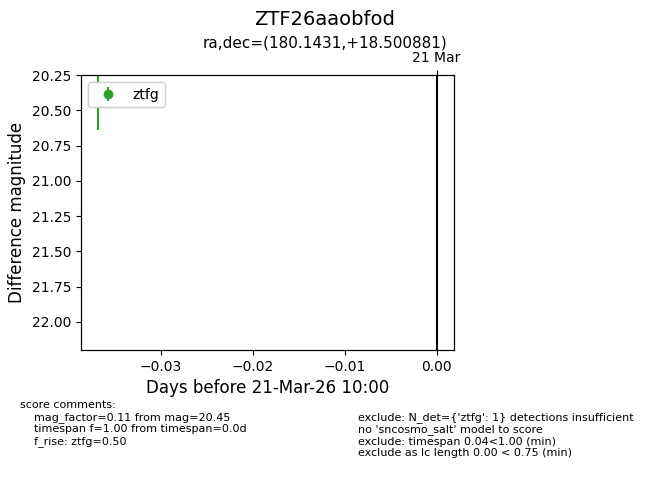
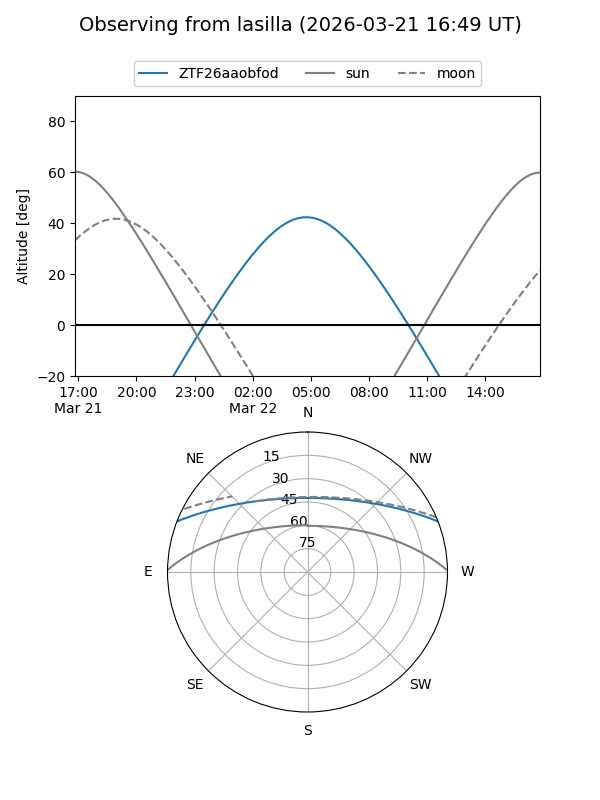
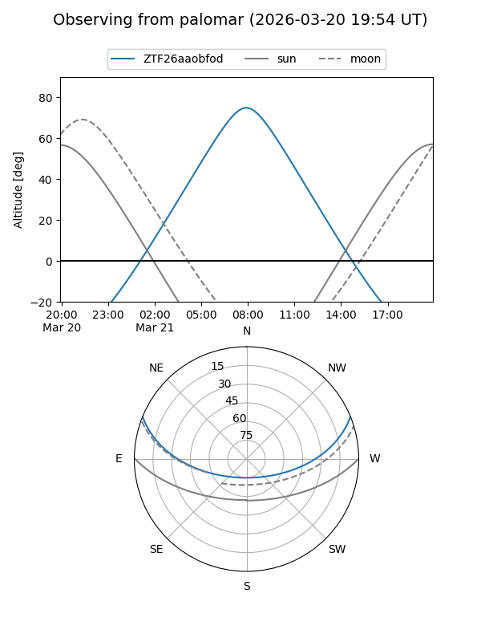

ZTF26aaobfod
Target ZTF26aaobfod at 2026-03-21 10:02
Aliases and brokers:
FINK: link
Lasair: link
ALeRCE: link
alt names
ZTF26aaobfod (ztf,fink_ztf)
Coordinates:
equatorial (ra, dec) = 180.1431,+18.50088
equatorial (HMS+DMS) = 12:00:34.35,+18:30:03.17
galactic (l, b) = (246.6667,+75.46241)
Flags:
Photometry:
last ztfg=20.45
1 ztfg detections
Lightcurve

Visibility


Additional plots